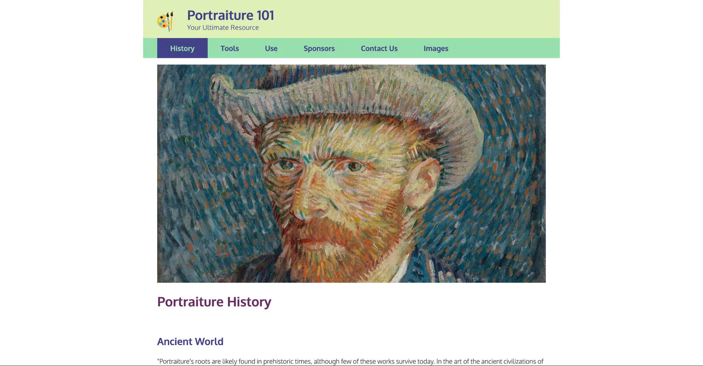
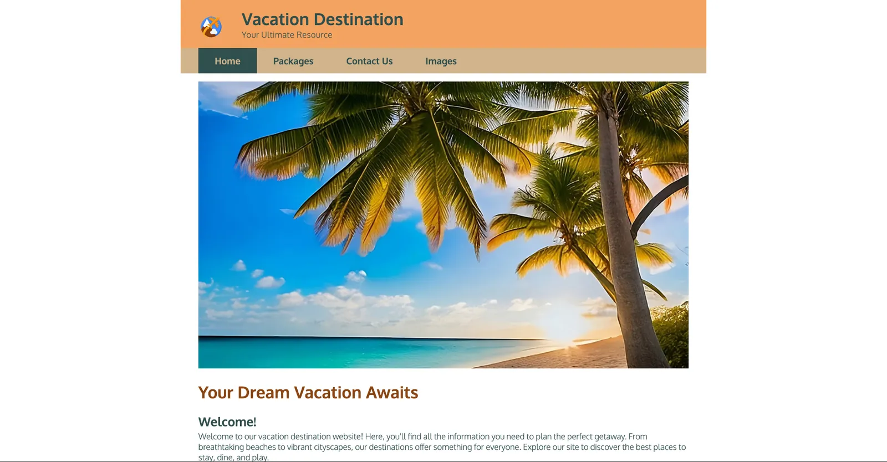

Learning HTML in DWDD 1600
Introduction
DWDD 1600 was my first introduction to web development. I had just switched my major to Web Design and Development, and I took the class right after, that summer. DWDD's curriculum made immediate sense to me, although the HTML admittedly did not. I stretched what I thought I could do that summer, and I began learning a new language: basic HTML.
I looked up the class before I signed up for it, and UVU's website said it was one of the most failed classes in the entire school, so I began the class with the intention of being one of the people who passed it.
What happened
The class was split into weekly projects. We followed a video tutorial on how to design a practice site, and it got harder every week. Basic HTML was a new experience for me, and it was interesting laying out a site using just bare code, even before it was styled with CSS.
We separated the sections of our practice site into different paragraphs, and we used different elements to format those sections: unordered lists, navigation elements, header tags and more. The slow but sure progression in difficulty let me learn the topics at a pace I thought was best.

About halfway through the class, we were introduced to CSS and its direct relationship with HTML. We did basic styling: we changed the color of the nav menu and header, the font, and the font size of the site. This new tool changed the way I viewed web development. I began to realize the design potential, and the initial hook of estimated future income expanded into real enjoyment of this potential career.

Conclusion
This class taught me to read and understand basic HTML and CSS, and that skill was and is extremely useful for what I want to do with my career. I can see what I want to design, translate it (to an extent) to code, and change it to better fit the user's needs.
My finished assignments for DWDD 1600 Original assignment (PDF)